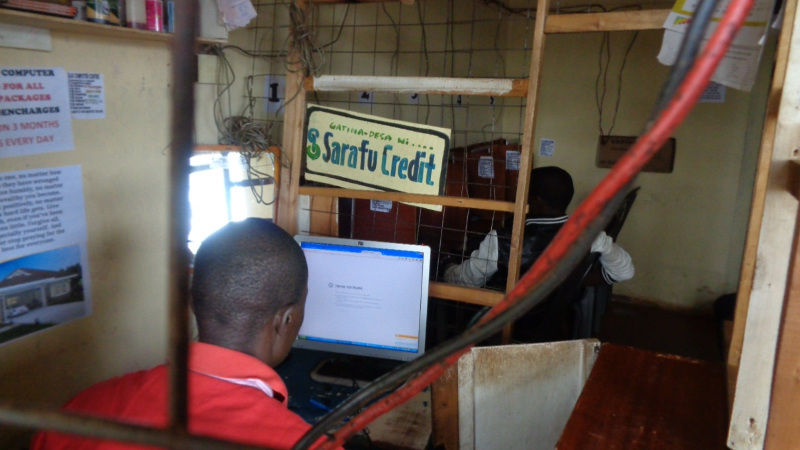
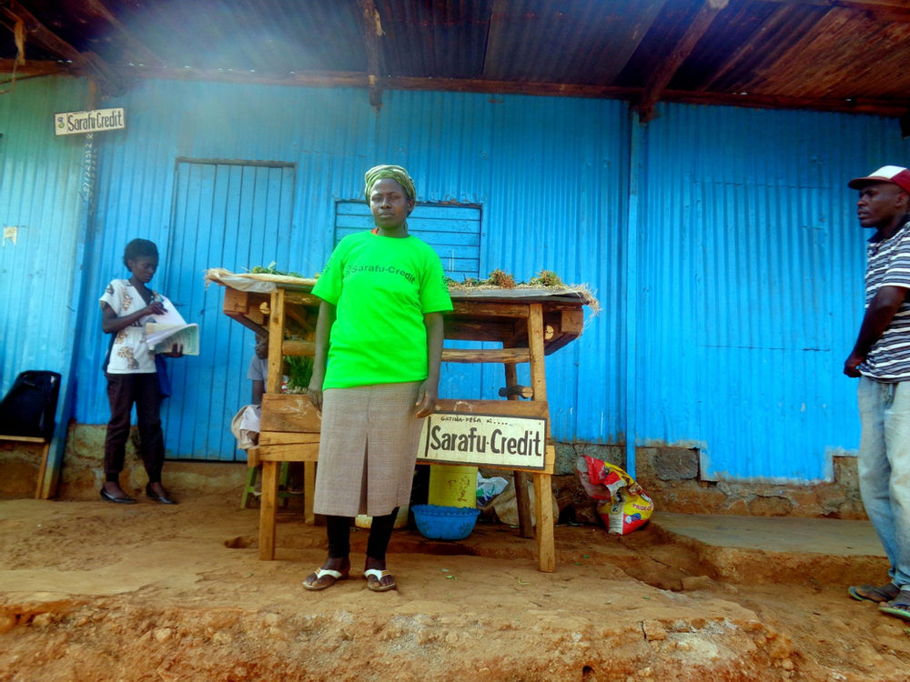
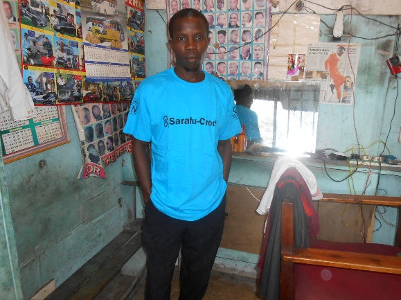
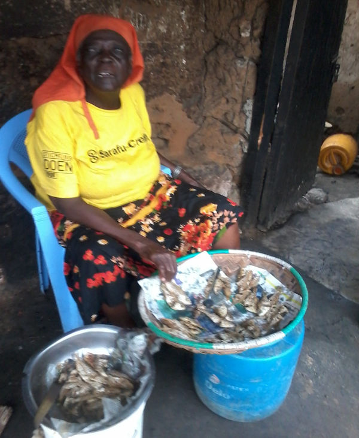

715 Members and Growing Fast
Sarafu-Credit users in five locations around Kenya have increased by over 83% since January 1st. Our Super Markets and Credit Clearing Offices in five locations are beginning to develop a strong local presence but it is our users that do the most to grow these networks by simply showing how much their trade is increasing. Below are some recent examples of Sarafu-Credit users in Nairobi and Mombasa:
Key Examples in Nairobi - by Daniel Mukosia our Nairobi Coordinator
Dickson Mutashe has been a member of Gatina Business Organization for the last two years. He owns a computer training center at 56 Kawangware. He says he has been using Sarafu-Credit and so far he has been able to buy goods and services from other members who offer different services from his, such as paying tuition for his children. He also offers web surfing, printing, photocopy and playing computer games. He also uses Sarafu-Credit as change to his regular customers who also use the Sarafu-Credit to purchase food stuff such as Mama Mboga. "The circulation of Sarafu-Credit has enabled me to get more customers and increase daily sales." - Dickson Mutashe
Mary Akothe (Mama Mboga) located at Gatina Check point started using Sarafu-Credit early this year. She noticed Sarafu-Credit after realizing that the credit has enabled most of the businesses around her to be able to save the money. She has been actively trading with Sarafu-Credit and says "My business has been improving on a daily basis by increasing sales due to increase of daily customers who have been using Sarafu-Credit backing up the Kenyan shilling to purchase goods and services within the network." She has also been contributing towards chama savings and will be in a position to get loans to expand her business. She has been able to purchase more stock using Sarafu-Credit and this has enabled her business to grow and she is active in recruiting more and more members along her entire supply chain.
Key Examples in Mombasa - by Lydia Anyango our Mombasa Coordinator
Kennedy Ongweko of Bangladesh community near Mombasa owns a kinyozi (barber shop) and he has many Sarafu-Credit customers. "I never used to have a lot of children customers but ever since I registered to be in the Business
Network all the mamas in the market bring their children to my knyozi because I accept Sarafu-Credit," he says. In return Kennedy uses Sarafu-Credit to buy food from the market and also pays for repairs with it.
Francisca Ayieko or ‘Teclar’ as known by many people in Bangladesh community as Teclar uses Sarafu-Credit on a daily basis to sell fresh water. A 20litre gallon of water goes for 5/= and she accepts the full value in 5 Sarafu-Credit (in the form of Bangla-Pesa). She was one of the first traders of BP starting in 2013 and has been active ever since. "Sarafu-Credit (Bangla-Pesa) has been of great help to me because I receive a lot of customers fetching my water," she says. "I also sell a lot of my fish. Sometimes I accept only Sarafu-Credit when one does not have the Kenya shillings at all instead of accepting debts that I have to wait to get repaid", she adds.
